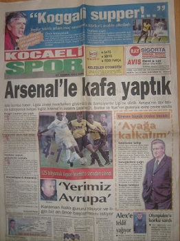
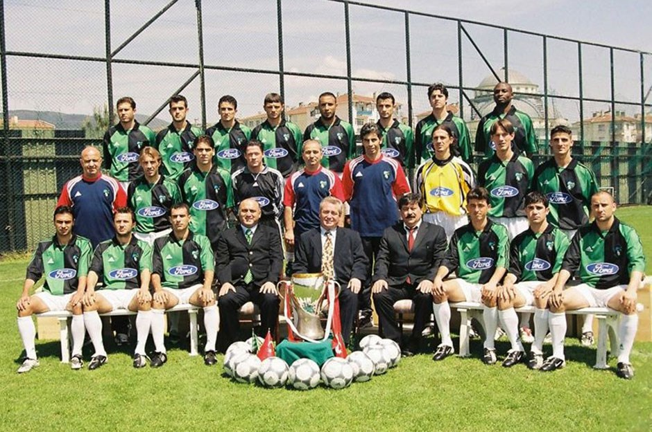

Tarihten Alıntılar
Siz, Kocaelispor'un Arsenal'i, hem de as kadroya çok yakın Arsenal'i 4-1 yendiğini biliyor musunuz? Hem de bunun 2001 yılında olduğunu biliyor musunuz? Bilmeyenlere Hikmet Karaman'ın Türk Futbol tarihinin efsane olarak lanse edilen maçlarından birisine imza attığı güne götürelim.
25 Temmuz 2001. Sezonu Fenerbahçe lider bitirmiş. Şampiyonluğun Galatasaray adına gittiği maçta da yine Hikmet Karaman var. Kocaelispor 2-0 öne geçiyor Ali Sami Yen'de. Ardından Galatasaray 2-2'yi yakalıyor. 90.dakikada Galatasaray maçı çevirdi derken Kocaelispor maçı 3-2'ye getiriyor. Galatasaray'a ağırdan da öte bir darbe vuruyor. Arsenal de 1 sene önce Uefa'yı finalde aynı Galatasaray'a kaybetmiş bir ekip. Hikmet Karaman'ın ekibi ile Arsenal aynı yerde kamp yapıyorlar.
Muhtemelen bir gün Hikmet Karaman, Arsene Wenger'e maç teklif ediyor. Ya da tam tersi. Tabii Hikmet Karaman altta kalmıyor. Diyor ki; "Sizin kupada yenildiğiniz takımı, ben kendi sahasında yendim. As takım ile mücadele edin". Wenger'de bundan mı çekinecek, as takımı çıkartıyor. As takım da as takım hani. Keown, Seaman, Vieria, A.Cole, Dixon, Berkgamp hatta İnamoto bile var. Yedekten Henry bile giriyor oyuna. Kocaelispor'da Ayman, Lazarov, Serdar Topraktepe, Nuri, Alex Yordanov, Timko'lu as kadrosu ile çıkıyor.
Maçın ilk yarısı 2-1 bitiyor. Yetmiyor Hikmet Karaman'a. İlla ki iz bırakacak. Yine Arsene Wenger'e final skoru yaşatıyor. 4-1 bitiyor maç. Penaltısız hem de. Arsenal'e Kocaeli'nin plakasını bırakıyor. Sonrasında da Hikmet Karaman'ın o bildik zafer gülümsemesi ile elinde sembolik kupası... Arsene Wenger, Kocaeli bile diyemiyor şaşkınlıktan...

Kocaelispor Tarihçesi
1957 yıllarında Baçspor kulübünün yöneticileri İzmit Belediyesine müracaat ederek, şehrin doğu kesiminde bulunan gençlerin spor yapmalarına cevap verecek bir arsanın verilmesini isterler. Belediye Başkanı Osman GENCAL konuya yakın ilgi gösterir. Bu ilginin temelinde GENCAL’ın eski bir sporcu olması aynı zamanda Baçspor’un üyesi olması rol oynar. Belediye Eski Tayyare meydanında 28 bin dönümlük araziyi 1 Lira gibi sembolik bir ücretle Baçspor’a verir. 1961 yılından sonra karayolu şehir içi güzergahının değişmesi üzerine arsanın istimlak olması gündeme gelir. Kulübün tapulu malı olan bu arsa İzmit şehrinin spor tesisleri bünyesinde mütalaa edilerek 283.000 TL bedelle B.T.G.M’ince istimlak edilmiştir. Arsanın satışından elde edilen bu gelirle Baç semtinde bir arsa satın alınmış ve hemen inşaata başlanarak, bina bitirilmiştir. Güzel bir tesise kavuşan Baçspor yöneticileri, ilk kez 1964 yılında profesyonel bir takım kurmayı ve 2.Ligde yer almayı düşünürler. Bu yıllardaki yasal mevzuat 2.Ligde yer alacak kulüplerin en az üç takımın birleşmesi sonucu ortaya çıkacak bir kulüp ve yeterli tesisleri olması koşullarını arıyordu. 1965 yılında bu koşulları yerine getirebilmek için İzmit Gençlik ve Doğanspor yöneticileriyle bir araya gelinir, toplantılar olumlu geçer fakat iş kulübün renkleri konusuna gelince üç kulübün yöneticileri kendi renklerinden vazgeçmek istemez. Zamanın Futbol Federasyonu yetkilileri özellikle bölge ismi taşıyan kulüpleri liglere öncelikli alıyordu. Bu durumu iyi değerlendiren Baçspor Yöneticileri 1965 yılındaki kongreye kulübün ismini Kocaelispor olarak değiştirilmesi önerisiyle gelir ve kongre delegeleri isim değişikliği sonucu Türkiye Amatör Futbol Ligine ilk adımı attıracak olan bu öneriyi tereddütsüz onaylar.
Kocaelispor hemen başvurusunu yapar, başvuru üzerine federasyon yetkilileri kulübü ve tesisleri heyet ile birlikte yerinde inceler. Karar büyük çoğunluk ile Kocaelispor’un lehine olur ve Kocaelispor 1965-1966 sezonunda amatör lige katılır. Kocaelispor bir yandan amatör ligde mücadele verirken yöneticiler profesyonel ikinci ligde yer alabilmenin çalışmalarını sürdürürler. Üç Kulüp yöneticileri tekrar bir araya gelirler, tüm konularda anlaşarak yeşil siyah renkleri benimseyerek ortak kongrelerini yaparlar ve yönetim kurulunu seçerler.
Baçspor’a arsa tahsisiyle başlayıp bugünlere gelinmesinde Belediye Başkanı Osman GENCAL, Belediye Meclis Üyeleri, tesisin inşaatında büyük katkıları olan İsmail KOLAYLI, Y.Müh Şemsettin BAŞARAN, Y. Müh. Bedri GÜNGÖR, Müh. Ziya TAŞDELEN, Mannesman Fabrika Müdürü Alparslan AKMAN, İbrahim KÜÇÜKÖRS, Nasut KAYALI ve bu aşamaya gelişte maddi manevi destek veren Kocaelispor Taraftarları ve İzmit halkının oluşturduğu Kocaelispor artık bir semt takımı değil, tüm kentin takımıdır.
Kocaelispor 1966/1967 Sezonunda Türkiye 2.Ligindedir.
Kocaelisporumuzun Puan Durumu
| 3.Lig 2.Grup | Takım | Galibiyet | Beraberlik | Mağlubiyet | Puan |
|---|---|---|---|---|---|
| 1 | Kocaelispor | 21 | 1 | 5 | 64 |
| 2 | Belediye Derince Spor | 14 | 8 | 5 | 50 |
| 3 | Turgutluspor | 14 | 7 | 5 | 49 |
| 4 | Esenler Erok | 14 | 5 | 8 | 47 |
| 5 | Karşıyaka | 12 | 7 | 7 | 43 |
| 6 | Tepecikspor | 11 | 8 | 8 | 41 |
| 7 | Ofspor | 11 | 5 | 10 | 38 |
| 8 | Fethiyespor | 10 | 8 | 8 | 38 |
| 9 | Cizrespor | 8 | 8 | 9 | 32 |
| 10 | Ağrı 1970 Spor | 8 | 8 | 11 | 32 |
| 11 | Kozan Spor FK | 8 | 7 | 11 | 31 |
| 12 | Elazığ Belediye Spor | 7 | 8 | 11 | 29 |
| 13 | Fatsa Belediye | 8 | 5 | 13 | 29 |
| 14 | Erbaaspor | 7 | 6 | 13 | 27 |
| 15 | 1877 Alemdağ | 6 | 4 | 16 | 22 |
| 16 | Payasspor | 5 | 7 | 14 | 22 |
| 17 | Kemerspor 2003 | 6 | 4 | 16 | 22 |
Başarılar
Kocaelispor denince akla 90’lı yıllar gelir. Kocaelispor’un Türk futboluna damga vurduğu yıllardır. Kocaelispor 92’de Süper Lig’e yeniden merhaba dedi. 92-93 sezonun ilk yarısı efsane geçti ve lider tamamlandı. Ama iki yarıda aynı şekilde gitmeyince Yeşil-siyahlılar ligi 4. bitirmekle yetindi ve UEFA Kupası’na gitmeye hak kazandı. Kocaelispor bu dönemde 4 sezon ilk 5 içerisinde yer aldı. 2000’e kadar ligde başarılı bir kulüp olan Kocaelispor, 96-97 senesinde Türkiye Kupası’nı kazandı ve Kupa Galipleri Kupası’nda Türkiye’yi temsil etti.
SÜPER LİG: En başarılı sezonu; 1992-93 sezonunda ilk yarısını lider, sezonu da 4. bitirdikleri yıldır. Kocaelispor Süper Lig’de uzun süre büyük takımları zorlayan ekiplerden olmuştur.
TÜRKİYE KUPASI: Kocaelispor’un 2 Türkiye Kupası şampiyonluğu vardır. İlki 1996-97 sezonunda Trabzon’a karşı oynanarak kazanılmıştır. Çift maç usulünde oynanan final maçlarında 1-1 ve 1-0 ile gülen taraf Körfez ekibi olmuştur.
2. Türkiye Kupası ise 2001-02 sezonunda Beşiktaş’a karşı alınmıştır. Bursa Atatürk Stadı’nda oynan tek maç usulü finalde Beşiktaş’ı 4-0 gibi farklı bir skorla mağlup eden Kocaelispor bu kupayı 2. kez müzesine götürdü.